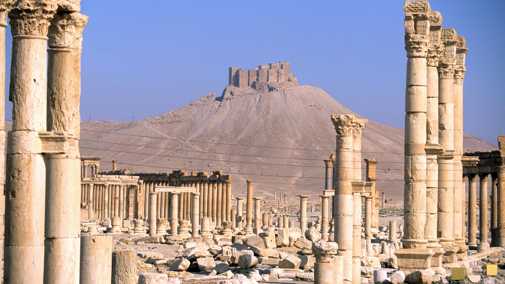

The Palmyrene Gate was the main entrance to the city of the Dura-Europos. Dating to the mid- second century BCE, during the city’s Hellenistic phase, the Gate was built into the western wall contemporary with other fortifications along the wall. It opened at the west end of the main street of Dura onto the adjacent plateau, leading to the west-bank Euphrates Road, allowing travel between Dura and the city of Palmyra. Since the earliest excavations at Dura beginning in 1928, the Gate has been a treasure trove of historical information, containing up to 200 texts of ancient graffiti and inscriptions. These were first recorded by archaeologist Jotham Johnson and published in 1931, from which source we are drawing our data. The Greek graffiti and inscriptions suggest a good amount military activity around the Gate, particularly during the Roman period. As James suggests, these soldiers, who identified themselves as stator or beneficiarius tribuni, might have acted as “police official scrutinizing traffic coming through the gate.” There is a small shrine on the inner part of the gate, containing various altars; perhaps this shrine served for the soldiers as a sanctuary to Tyche, which is mentioned in the inscription D42. Most of the texts in our database are graffiti from the South and North Walls of the Passage; but some are more formal inscriptions, and some occur in various other places on the gate.
Click on the inscription to view its metadata.